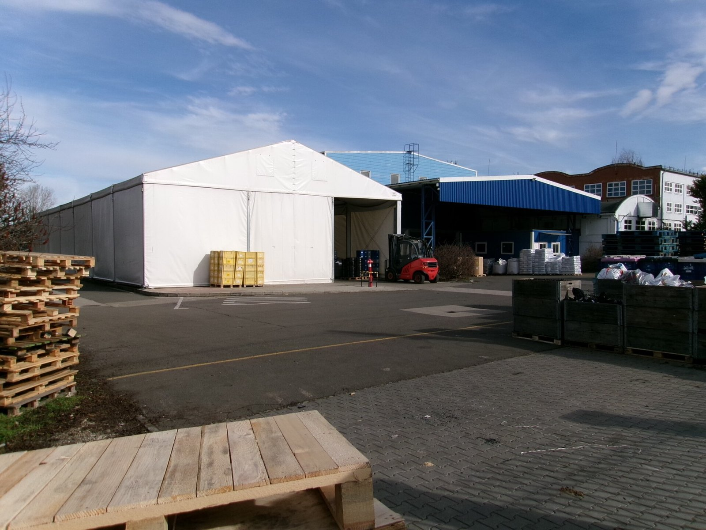
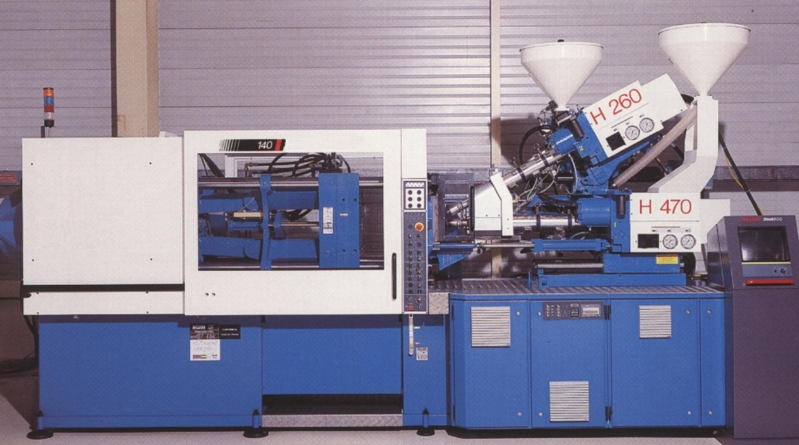

生产与质检
模具设计、试模到批量注塑在同一厂区完成。
加工流程
- 确认 3D 图和基准后做模流与分型评审。
- 加工模仁并配模。
- T1 试模和首件检测。
- 按确认结果修模。
- 签样后转批量注塑、修边和分装。
T1 试模后 3 天内寄出样品和全尺寸检测报告，每套模具含 3 次试模。

质检流程
- 来料检验：树脂批次与嵌件尺寸。
- 试模后首件全尺寸检测。
- 过程巡检每 2 小时抽检。
- 外观与功能全检。
- 出货抽检并附检测报告。
检测设备
- 三坐标测量机1 台
- 二次元影像测量仪2 台
- 色差仪1 台
- 拉力试验机1 台
- 恒温恒湿箱1 台
主设备与产能
- 高速 CNC 加工中心12 台
- 精密慢走丝线切割6 台
- 镜面电火花8 台
- 精密平面磨床4 台
- 注塑机42 台（90–800 t）
- 双色注塑机3 台
模具年产能约 180 套；注塑月产能约 600 万件。

试制记录
家电装配
- 交付
- 结构支架先核对装配孔与平面度，交付多腔模具、签样件和全尺寸报告。
- 验证
- 该项目的整机装配与性能由采购方验证。
电动工具
- 交付
- 硬胶壳体与软胶握持面组合，交付双色试模件和材料批次记录。
- 验证
- 该项目的跌落与耐候等级待补充。
照明设备
- 交付
- 透镜先确认外观和光路样板，交付透明注塑样品后按签样批产。
- 验证
- 该项目材料透光率与整灯光效分别验证，整灯数据待补充。
沿革
- 2008 年
- 建厂，从模具维修和小型模具起步。
- 2013 年
- 注塑车间投产。
- 2017 年
- 开始承接出口订单。
- 2021 年
- 新增恒温精密模具车间。
- 2024 年
- 建成三坐标与影像测量室。
认证状态
- ISO 9001：已有
- ISO 14001：已有
- IATF 16949：认证中
交付与包装
模具清洁防锈后锁定活动部件，木箱固定并附模具编号与维护清单。注塑件按签样包装分袋，外箱标注料号、模号、批次和数量。透明件用隔离包装避免摩擦，具体包装图先确认。
资料更新
- 2026-09-15试模记录增加材料批次核对项，T1 样品仍随全尺寸报告整理。
- 2026-08-11透明件包装记录补入隔离包装确认图，签样时一并核对取放方式。
- 2026-06-09双色模具资料单增加机台转盘接口核对栏，用于开模前确认。